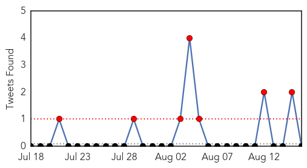

Unknown
30-Day Web Trend
0 alerts, 0 warnings

30-Day Twitter Trend
6 alerts, 1 warnings

Article Locations


Article Confidences
Top Articles:
- 0.983
- Salmonella outbreak investigated, after three people with links to disease die
- 0.957
- UN, humanitarian partners launch health plan in crisis-torn eastern Ukraine - Ukraine
- 0.951
- Salmonella outbreak patients die
- 0.934
- SGGP English Edition- Vietnam alerts for bird flu outbreaks
- 0.919
- Another dies of Congo virus raising toll to 3
- 0.917
- Chicago Tribune
- 0.917
- Chicago Tribune
- 0.916
- Health officials probe salmonella outbreak after three deaths
- 0.910
- The world windows to Thailand
- 0.910
- The world windows to Thailand
- 0.910
- The world windows to Thailand
- 0.907
- English health experts investigate Salmonella outbreak
- 0.866
- A road toll company workers, clean paviment up after an earthquake struck near Quito on Saturday
- 0.866
- A migrant arranges his belongings after ending a fast as a protest to demand for immigration reforms in Mexico City
- 0.866
- Missouri Governor declares state of emergency in Ferguson amid protests
- 0.866
- Kenya Airways suspends flights to Freetown, Monrovia due to Ebola
- 0.866
- Caracas shaken by quake, no injuries reported
- 0.866
- A Colombian soldier guards various handmade explosive devices, during a news conference in Cali
- 0.866
- Russia says no military personnel in Ukraine relief convoy- Pentagon
- 0.866
- Bagi's dog Mokka crosses a muddy road while searching for truffles in a forest near Jaszivany
- 0.843
- National outbreak of salmonella yet to reach Stoke-on-Trent
- 0.841
- Two dead after contracting Congo virus in Balochistan
- 0.775
- Alabama prisons hit with worst TB outbreak in 5 years
- 0.750
- Health ministry launches rotavirus vaccine - Zimbabwe
- 0.711
- STD rates skyrocket in Hillsborough County
- 0.679
- Controversial circumcision technique likely route of herpes transmission
- 0.678
- Is it an egg problem? 156 sick: UK investigating national outbreak of Salmonella
- 0.626
- Mosquitos with EEE Found in New England
- 0.564
- How Periodontal Disease Can Lead To Heart Disease
- 0.542
- #feeling sick: Can Twitter help better identify foodborne illness cases?
- 0.509
- DME inspects GRH in Madurai
- 0.507
- ′Don′t forget the trauma of people in Gaza′
Top Tweets:
-
No tweets found for Aug 16, 2014
Cholera
30-Day Web Trend
0 alerts, 3 warnings

30-Day Twitter Trend
7 alerts, 0 warnings

Article Locations

Article Confidences

Top Articles:
Top Tweets:
-
No tweets found for Aug 16, 2014